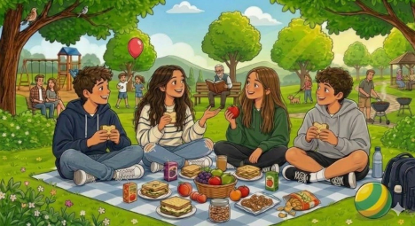

שאלון אנגלית

Look at the picture and answer the following questions.
answer each question orally in English.
הסתכלו בתמונה וענו על שאלות 1-5.
תוכלו להקשיב או לקרוא את השאלה בעצמכם. ענו באנגלית.
לחיצה על הכפתור להקלטה
מקליט...
00:30
0:15